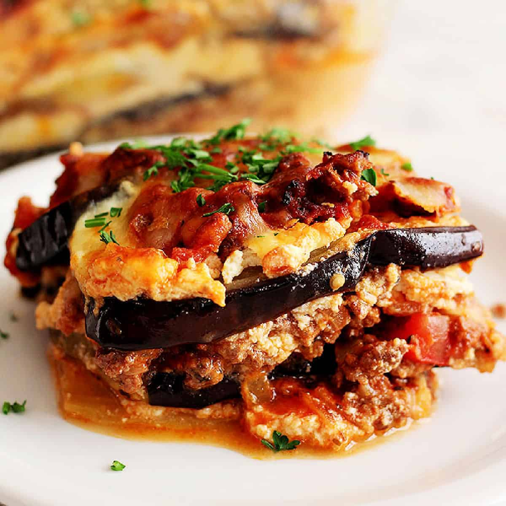

Eggplant and Ricotta Lasagne is a traditional lasagna dish originating from Italy. The dish is usually made with a combination of lasagne pasta, eggplants, butter, pine nuts, ricotta, tomato paste, basil, olive oil, salt, and grated Parmigiano-Reggiano. The eggplants are cut into slices, salted, drained, and broiled until tender.
Meal prep time : 1 hour 30 minutes
Servings : 6